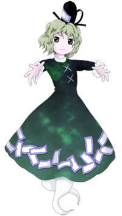

- Welcome to Touhou Wiki!
- Please register to edit. For assistance, check in with our Discord server or IRC channel.
Soga no Tojiko
Soga no Tojiko soga no tod͡ʑiko (♫) Tojiko Soga; Soga no Toziko | |
|---|---|
|
Soga no Tojiko in Ten Desires Ghost of the Descendant of the GodsMore Character Titles | |
| Species | |
| Abilities |
Causing thunder |
| Age |
Dead (Existed for more than 1400 years) |
| Location | |
Appearances | |
| Official Games | |
| |
| Print Works | |
| |
Soga no Tojiko (蘇我 屠自古 Soga no Tojiko) is a ghost who first showed up as the fifth-stage mid-boss of Ten Desires.
General Information[edit]
Tojiko is considered a vengeful spirit as she is a ghost who holds a grudge against humans. Among other vengeful spirits, she seems to be a quite powerful one. It is stated, however, in Symposium of Post-mysticism, that her grudge seems to be fading away, meaning that she's steadily becoming a simple ghost that can cause thunder.
Personality[edit]
She is a very practical woman who can use coarse language, appearing to be a foil to Futo's airheaded, jovial nature. Though she has a quick temper and her attitude is rough, she is actually a very nice person. She doesn't seem to mind being a ghost as it's convenient for her.
Ability[edit]
- Causing thunder
Creating thunder is a common ability for vengeful spirits, and Tojiko frequently uses it when angered. As she is a powerful vengeful spirit, she can create the full effect of loud, booming thunder. As Taoism uses things like lightning, and since there is the borrowed power of the sorcery called the "thunder rites" (雷法), the power to cause thunder may be a power that can be acquired and mastered as a Taoist.
Another theory is that the father of the character Tojiko is based on, Soga no Umako, built the temple Gangoji (元興寺), and the youkai of Gangoji, Gagoze (元興寺), who was exterminated by the child granted by the lightning god to a farmer, which is commonly thought to be the basis. (The Gagouji of the spell card Thunder Arrow "Gagouji's Cyclone" (meaning "monster" in child language) is based on Gagoze, but the folkloristics scholar Kunio Yanagita denied the etymology that "Gagouji" came from "Gagoze")
Iku Nagae also used lightning, but unlike Iku, Tojiko's ability is directly related to lightning (unlike Iku's "reading the atmosphere"). Different from Iku's lightning blasts, Tojiko's lightning came in the form of jagged arrangements of arrows.
Possessions[edit]
In preparation to become a shikaisen, Tojiko set up a jar to preserve her spirit in, much in the same way that Mononobe no Futo used a plate. However, Futo swapped the jar with an unfired one, which quickly decayed, causing Tojiko to become a ghost instead. She is not known to have any possessions at the moment.
Character Design[edit]
Origin[edit]
The Soga clan was a family who waged a fierce political battle with the Mononobe clan over Buddhism. In particular, Soga no Umako and Mononobe no Moriya were two very influential courtiers to Emperor Bidatsu and his brother, Emperor Youmei, who was the father of Prince Shoutoku. Both Youmei and Shoutoku were proponents of Buddhism, which led to victory for Umako, whose forces killed Moriya and his allies in the Battle of Shigisan in 587.
Of the Soga clan, there existed a Tojiko no Iratsume (刀自古郎女), who was the daughter of Soga no Umako and a consort of Prince Shoutoku, the basis for Toyosatomimi no Miko, of which Tojiko no Iratsume only has has a name basis.
The Fujiwara clan (of which Fujiwara no Mokou is based on) played an important role in taking down the Soga clan and removing the Soga clan's place as an influence to Japan as a whole. This event is known as the Isshi Incident (乙巳の変).
Name[edit]
Her known name is Soga no Tojiko (蘇我 屠自古). Her last name Soga (蘇我) was taken from the Soga clan, but it can literally mean "Ego Awakening". Her first name Tojiko (屠自古) literally means "Your Ancient Carcass". Perhaps coincidentally, the first characters from her first name and surname, refer to tosa (屠蘇), a kind of spice sake served at New Year's.
Design[edit]
In Ten Desires's official art, Tojiko has green hair, green eyes and a dark green dress with ofuda along the bottom. She has two ghost "tails" where her legs should be, and a kanmuri (冠)-style hat.
Story[edit]
Games[edit]
- Ten Desires
- Main article: Story
Tojiko appears as the stage 5 midboss. The heroines fight her when they make it into the Hall of Dreams' Great Mausoleum before fighting Mononobe no Futo. She also reappears alongside Futo and Toyosatomimi no Miko during the final boss battle.
Spin-offs[edit]
- Hopeless Masquerade
Tojiko made a background cameo appearance in Hopeless Masquerade on the Divine Spirit Mausoleum stage. She is seen floating around.
Relationships[edit]
| Attention: This section is a stub and it needs expanding with more information related to the section's topic. If you can add to it in any way, please do so. |
Leader of the group that Tojiko follows.
In addition to being Tojiko's supervisor, Futo's also her friend whom she sometimes bickers with. The friendship and rivalry between them lead to Tojiko being unable to reincarnate like Futo and Miko can.
Tojiko's relationship with Seiga doesn't seem to be particularly close.
Spell Cards[edit]
Additional Information[edit]
- Soga no Tojiko is the only humanoid ghost in the Windows Touhou Project to have a ghost tail rather than legs. Mima, a character from the PC-98 games also has a ghost tail, and they are both evil spirits as well.
- The Soga clan is said to be descended from Takenouchi no Sukune, Emperor Kougen and Amaterasu. As such, she can be considered as "the Descendant of the Gods."
- In real history, the Soga clan was overthrown from power in 645 during a coup d'état conspired by Nakatomi no Kamatari, founder of the Fujiwara clan, among others. Kamatari was later struck and killed by lightning, which people believed to be a curse laid by the late Soga clan; this is a possible inspiration for Tojiko's ability. Also, Kamatari's son, Fujiwara no Fuhito, is the speculated model of Fujiwara no Mokou's father.
Fandom[edit]
Official Profiles[edit]
|  | ○５面中ボス 神の末裔の亡霊
蘇我 屠自古（そがのとじこ） 種族：亡霊 日本の古代豪族、蘇我氏の亡霊。 本人は別に霊体である事に不自由を感じていない。むしろすぐに壊れてしまう人間の体などいらない、と考えていた。 蘇我氏と物部氏は仏教を巡り争っていたが、布都と屠自古の二人の関係性は悪くなく、持ちつ持たれつの間柄のようだ。 |
○ Stage 5 Mid-boss: Ghost of the Children of the Gods
Species: Ghost A ghost of a member of the powerful ancient Japanese family, the Soga. She is serving Miko together with Futo, but she has been denied to resurrect as a human due to her connections with Futo in the past. It looks like she is treated conveniently by Futo taking a spirit form. She herself isn't feeling any particular inconvenience taking the spirit form. Rather in fact, she had been considering that she had no use for a human body, which would break down so quickly. The Soga and the Mononobe had fought over Buddhism, but Futo and Tojiko's relationship is not in bad terms, and thought to be a give-and-take relationship. For now, they both hate Buddhism. |
Official Sources[edit]
- 2011/08/13 Ten Desires - Settings and Extra Story.txt (official profile)
- 2011/11/25 Febri - Febri/Ten Desires and Touhou Project interview with ZUN Part1
- 2012/04/27 Symposium of Post-mysticism - Soga no Tojiko
| This page is part of Project Characters, a Touhou Wiki project that aims to write proper descriptions for all official characters of Touhou Project. Please keep the character page guidelines in mind when contributing. |